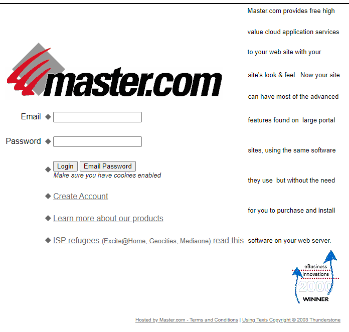
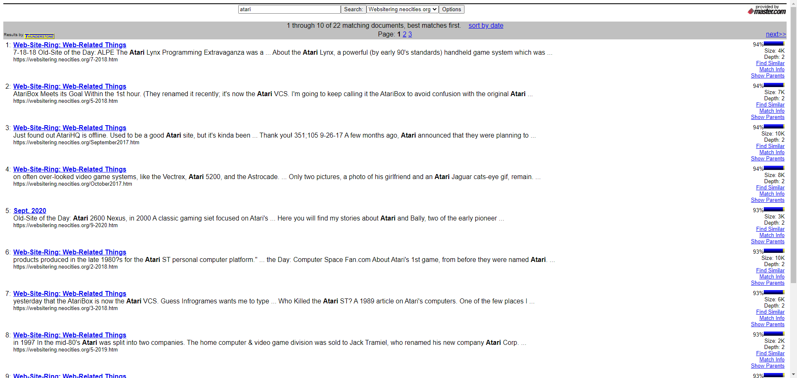
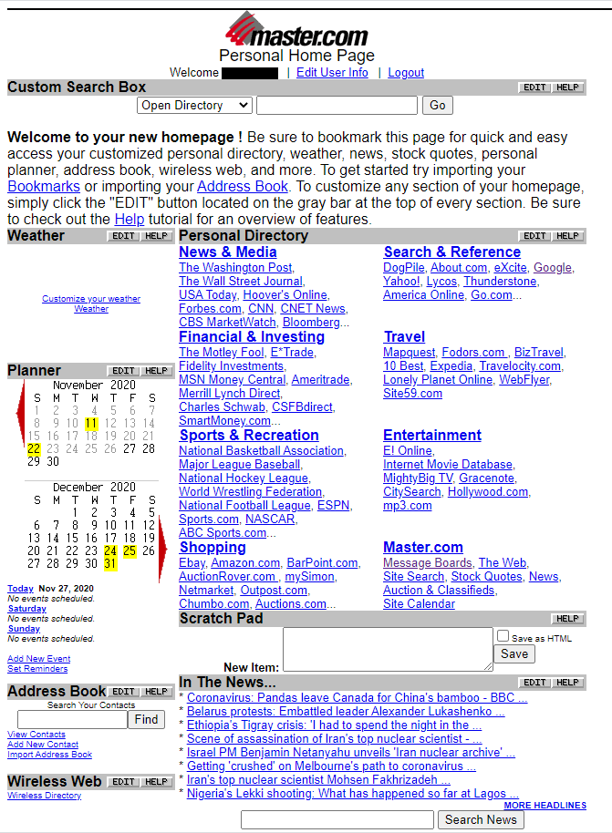
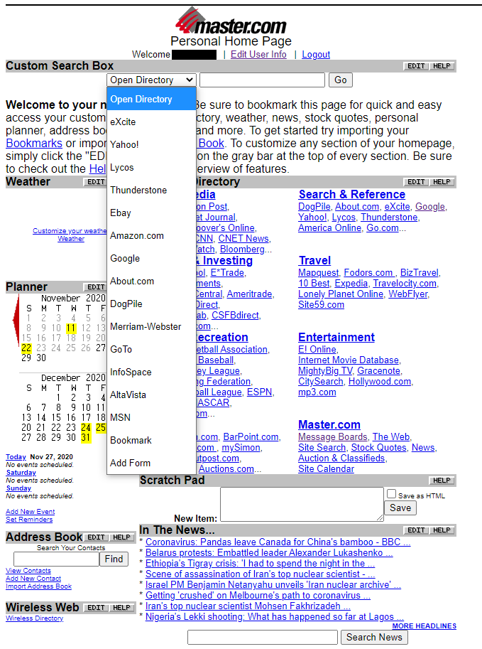
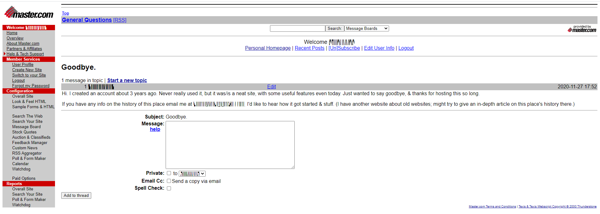

Master.com gave users the tools needed to create their very own version of Yahoo. It, along with DMOZ, Geocities, & other similar sites, was one of the first Web 2.0, user-controlled, sites on the Internet. As such, it deserves to be memoralized.
Below is the login screen. It used your email address as your user name; if you forgot your password you could hit the "Email Password" button . That button does exactly what it says; it sends you your password. No confirmation question; no reset password link; you got your password sent to you in plain text through an unencyrpted email. Not exactly secure, but very user friendly. For security, I've blacked out or scrambled my username in this article's other screenshots.

This is the main menu. To the left you'll see a list of services you could add to your website, to the right you'll see configuration options. This is the main configuration page for users' public portal page.
Master.com offered a website search service, based on software from Thunderstone, a relatively old company which provides search engines for enterprise computers. I had it crawl my site; it's not bad, but I stayed with SiteSearch as my search engine. Here's a link so you can try it yourself, before December 31. The search engine I linked to defaults to MAster.com's DMOZ mirror; you can search my site by selecting it in the drop down menu next to the search box. Of course Master.com also offered a search box which only searched the user's own site. I think the free limit was about 5000 pages. And there were embedable versions of these too; I just didn't want to add Master.com to my privacy policy.

Master.com offered a homepage for their users, similar to Yahoo's old homepage, or MyWay's, if you remember them. Simple, if a bit cluttered. I like it, & wish I'd used it more often. For some reason the news is at the bottom of the page; I would've liked it better if it was at the top of the page. I think this is different from the public portal page users could set up for other people to view.

A list of search engines. Master.com mirrored the Open Directory Project (DMOZ) & added ads to generate revenue, so they list the Open Directory first. I'm not sure if the other services were listed based on their popularity in 2000, or if they were listed based on the date Master.com added them. I'm not sure if that "Thunderstone" link referred to Master.com's site search feature, or another service.

My goodbye message, as an example of what their forum software looked like.

The text of this article is in the public domain. The screenshots are of copyrighted software, but are used for a limited, educational purpose.